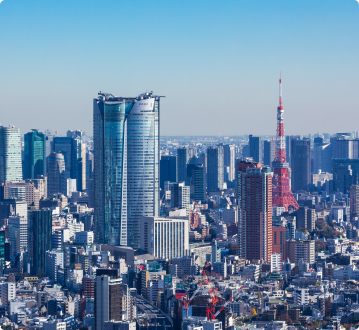
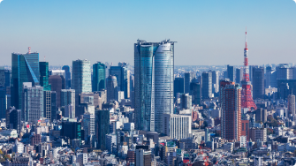

当事務所では、現在「小規模事業者持続化補助金」「ものづくり補助金」「IT導入補助金」「事業再構築補助金」の申請代行を行っております。単なる補助金申請のみならず採択率向上や事業の売上アップなど総合的な観点よりコンサルティングを行っており、補助金の採択率も80％以上を誇っておりますので、是非一度ご相談ください。 また、代表の佐々木がシステム開発会社も保有しておりますので「補助金を使ったシステム開発」などの案件もご対応可能です。
想いを価値に。
可能性を実現に。
Greeting
想いを価値に。
可能性を実現に。
この度は、当事務所webサイトに訪問いただき誠にありがとうございます。
当事務所は2019年開業、2021年法人化しており、補助金申請の第一人者として事業再構築補助金をはじめ様々な補助金申請業務に携わってまいりました。企業売買も精通しているため、M&A・事業継承の分野でもお役に立てる場面があるかと思います。是非一度ご相談ください。
当事務所はご相談いただいたら必ずお役に立つことをモットーに、会社設立から各資金調達、事業の発展に関する書類手続きなどをワンストップでサポートしております。許認可・補助金・融資すべての業務に携わっておりますので丁寧・スピードには定評があります。訪れたら必要なものが出てくるような士業のデパートのような事務所を目指しております。


許認可申請書の種類は非常に多く、建設業許可をはじめとして、許認可の種類は1万種類を超えます。 必要な許可がわからない、この事業に許可は必要か等などもお気軽にお問い合わせください。 許認可の中には、会社を設立する際定款に特定の文言を入れる必要があったり、資本金の額を調整する必要があります。そういった際の方法なども精通しておりますので是非お気軽にお声がけください。
ビザ申請と一口に言ってもその外国人によって依頼内容は様々です。留学ビザ、特定技能ビザ、就労ビザ等種類は様々で、外国人の現在の状況に応じて認定申請・変更申請・更新申請を行います。ビザ申請は外国人にとって非常に重要であり、今後の生活や人生にも大きな影響を与えます。ビザにお困りな方は是非一度ご相談ください。
行政書士法人LILACでは中小企業M&A・事業承継も取り扱っております。M&A・事業承継ではヂューデリジェンスや税務問題等も発生いたしますが、税理士をはじめとした外部の専門家と提携しておりますので、M&Aにかかるすべての業務を行うことが可能です。また、代表の佐々木が複数の事業会社を持っておりスモールM&Aに精通しておりますので、会社の売買案件などもありましたら是非一度ご相談ください。

佐々木 真理子
MARIKO SASAKI
行政書士 / 宅建建物取引士/貸金業務取扱主任者資格保有
300件以上の補助金申請支援実績があり、補助金に係る許認可申請や各種給付金などにも幅広く精通している。事業再構築補助金ではいち早く情報をキャッチアップし、事業者と密にコミュニケーションを取ることでスムーズな申請をサポート。 事業再構築補助金、ものづくり補助金においては採択率80％以上の実績を誇っており、補助金獲得総額は3億円を超える。 趣味は会社のショッピングで、スモールM＆Aにも精通している。 また、自身も事業会社を数社保有している中で保有する不動産会社では未公開物件を数多く扱っており、会社売買からシステム開発、不動産売買などあらゆる相談に対応が可能となっている。

岩川 もも
MOMO IWAKAWA
行政書士
エステ店勤務から建設業経理事務職、電気工事会社立上げ経理総務事務を経験した後、会計事務所に勤務。得意業務分野は補助金申請。各人に最適な補助金を選択することを得意としている。

大平 康弘
YASUHIRO OHIRA
パートナー行政書士
高校卒業後様々な職を経験して独学にて平成24年に行政書士の資格を取得。その後、地元福井県で行政書士法人に就職し、東京に支店を出すタイミングで上京。東京オフィス立上げを経験し、事務所では役員に就任。新規開拓をしつつ幅広い業務を経験した後に、2020年に事務所を退社、現在は許認可業務を中心に全種類の業務を行っている。

- 会社名
- 行政書士法人LILAC
- 所在地
- 〒160 - 0021東京都新宿区歌舞伎町１丁目１−１5東信同和ビル 803号
- 電話番号
- 080-4099-6001
- 営業時間
- 9:00-18:00